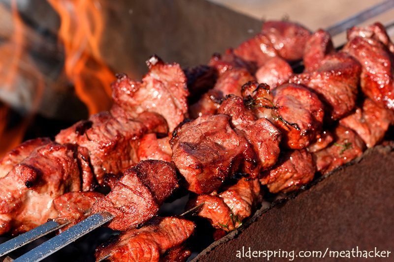

Beef Heart Kebabs

Description
Beef hearts... The first time I saw one, the large size was intimidating. But, a grilled heart is one of the best selections for the plate. These spicy heart kebabs will do the trick.
Ingredients
- 1 beef heart
- 3 garlic cloves
- 1 tablespoon cumin seeds or 1 tablespoon ground cumin
- 2 chipotle peppers
- 3 tablespoons smoked paprika
- 1 tablespoon red wine vinegar
- 1 tablespoon apple cider vinegar
- About 2 tablespoons extra virgin olive oil
- Salt and pepper to taste
Instructions
- Pre-heat oven to 250 degrees F (121 C).
- Place the ribs in a deep pan.
- Cover the ribs with the BBQ rub.
- Mix BBQ sauce and cider. Brush the mixture onto the ribs.
- Cover the pan with aluminum foil.
- Bake for 3 hours. Brush BBQ sauce/cider onto ribs each hour.
- Remove the ribs from the oven.
- Coat the ribs with BBQ sauce and cider.
- Grill for 10-15 to desired level of char. Brush on last layer of BBQ sauce and cider when nearly finished grilling.